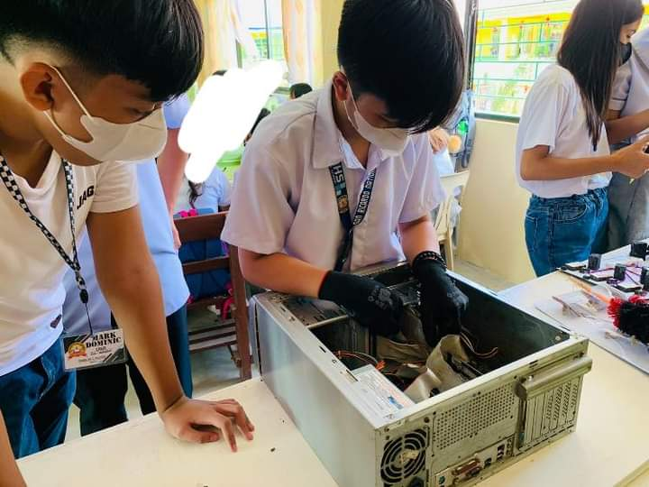
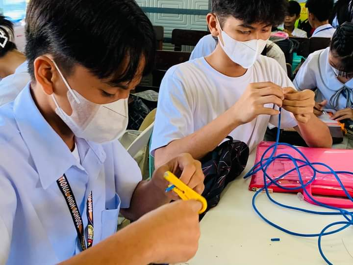

Information and Communications Technology
What is the simple definition of ICT?
Definition. Information and communication technologies (ICT) is defined as a diverse set of technological tools and resources used to transmit, store, create, share or exchange information.
What is ICT as a student?
ICT students gain knowledge and skills needed to effectively apply, use and manage technology when solving problems specifically related to information and communication. Classes provide a human and organizational focus on technology–teaching students how to be effective users of technology.
What is the importance of ICT in students?
Improves knowledge retention of videos in learning for instance – a learner can retain more knowledge. Since use of ICT provides an avenue of teaching using different ways, learners are able to retain knowledge.
Modules
Documentations

